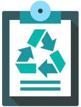

E-Lixo
Os resíduos eletrônicos, também conhecidos como e-lixo, são os resíduos gerados a partir do descarte inadequado de equipamentos eletrônicos. Estes resíduos podem conter componentes tóxicos como chumbo, mercúrio, cádmio e outros metais pesados, bem como substâncias químicas nocivas ao meio ambiente e à saúde humana. Além disso, a queima desses resíduos libera gases tóxicos que contribuem para o aquecimento global e a destruição da camada de ozônio.
O e-lixo é um problema crescente em todo o mundo, pois a tecnologia avança rapidamente e muitos equipamentos eletrônicos se tornam obsoletos em pouco tempo, o que leva a um aumento no descarte inadequado desses materiais.É comum, hoje em dia, trocarmos de celular a cada ano, comprarmos um computador mais moderno, uma TV maior para a sala, eletrodomésticos que facilitam a vida, e vários outros aparelhos eletrônicos que estão presentes no dia a dia.
Impactos Ambientais
O descarte inadequado de resíduos eletrônicos tem se tornado um grande problema ambiental em todo o mundo. Muitos desses resíduos são descartados em lixões e aterros sanitários, contaminando o solo e a água subterrânea. Além disso, muitos dos equipamentos descartados ainda poderiam ser reaproveitados ou reciclados, reduzindo a demanda por novos equipamentos e diminuindo o impacto ambiental da produção de novos dispositivos. Portanto, é importante conscientizar a população sobre a importância de descartar corretamente os resíduos eletrônicos, bem como incentivar a reciclagem e o reaproveitamento desses materiais. Além da poluição do ar, terra e água, a má gestão dos resíduos tem efeitos prejudiciais à saúde pública (devido à poluição ambiental e à possível transmissão de doenças infecciosas transportadas por vetores) e à degradação ambiental em geral, bem como aos impactos paisagísticos.
Gerenciamento
Para gerenciar adequadamente o lixo eletrônico, é importante seguir algumas medidas. A primeira delas é conscientizar a população sobre a importância de descartar corretamente os resíduos eletrônicos. É necessário incentivar a doação ou o descarte em locais adequados, como cooperativas de reciclagem e empresas especializadas em gerenciamento de resíduos.